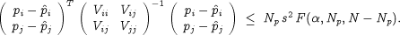
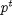
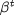
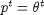

Sample Overlay Plot
In addition to the spreadsheets, the user can also create three types of statistical plots by choosing the Plot option from the Parameter Estimation menu on the MS Excel tool bar. Each of these is described below:
Overlay chart. This overlays the measured and predicted values for whichever variable is chosen from a
specified experiment. The user has the option of showing error bars by checking the Show standard deviations dialog box
(see appropriate figure in the next chapter). These error bars correspond to . The user selects one or more variables (choose Flat list, if you want to select more than one
variable). The charts can be plotted on the respective variable data worksheets, on a new sheet for each chart or all charts on one new sheet.
A figure showing a plot of the batch reactor variable R101.C(1) in experiment C13T1 can be found in the following
chapter. It can be seen that the agreement between the predicted values using the estimated parameters and the measured values is very
close.
Residual chart. This allows the user to plot the absolute deviation, relative deviation and/or weighted
(scaled) residual for each measured variable in each experiment. As for the "Overlay chart", the user may select one or more variables and plot
the charts on the respective data worksheets, on a new sheet for each chart or all the charts on one new sheet. Figures in the following
chapter show the dialog window and weighted residual plot, respectively, for the batch reactor variable R101.C(1) in
experiment C13T1.
Confidence ellipsoids.
This option gives the confidence ellipsoids in two-dimensional space for any pair of parameters according to the joint confidence region:

The parameters can be plotted against each other using different confidence levels (90%, 95% or 99%). The user may select any pair of parameters or plot the confidence ellipsoids for all pairs. An example of a confidence ellipsoid is shown in the next chapter.
Note: Although the variance model parameters have uncertainties, the user may wish to exclude these uncertainties from the calculations. In this case the vector  does not contain the parameters  and is defined as  .